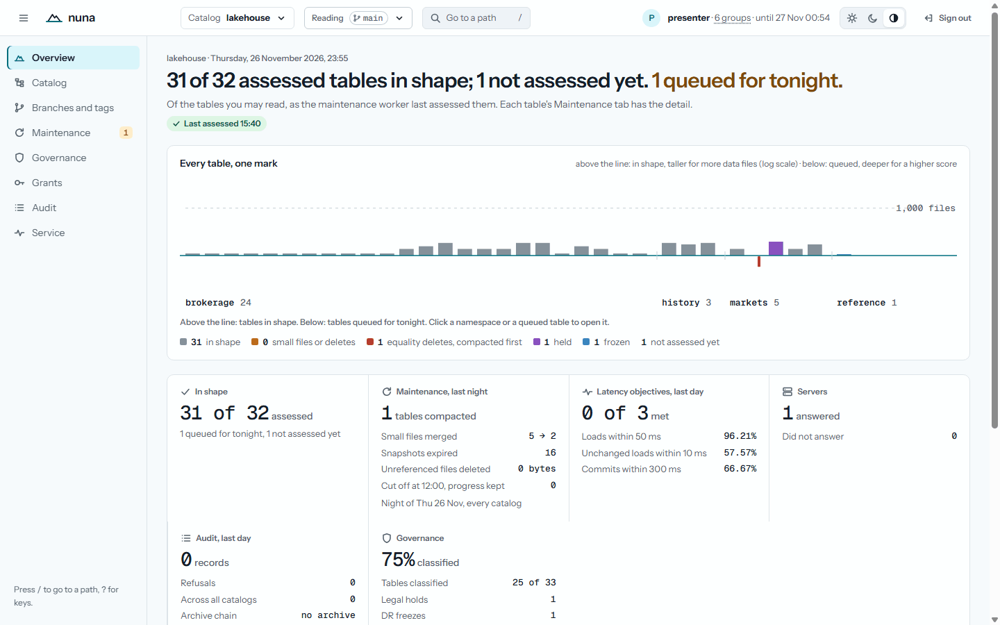
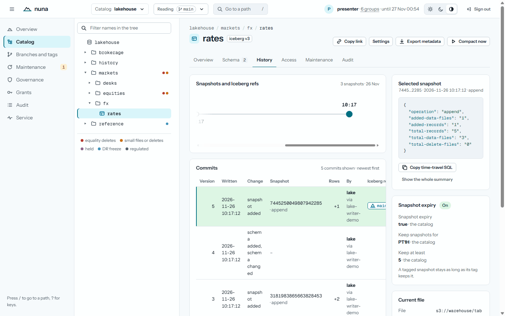

Run nuna on your laptop
Start the local demo, sign in to the console as presenter, look at one table and stop the demo again. At the end you have a working nuna on your laptop that keeps its data between starts. The first start builds everything and takes longest.
What you need
- A Windows machine with Git Bash. The demo's script,
demo/demo.sh, is a bash script. - Podman Desktop with its Podman machine. The demo runs on a one-node
kindcluster inside it and is sized for a machine with 8 GB of memory. - The programs
kind,kubectl,helm,curl,unzipandopensslon your path. Git Bash bringscurl,unzipandopenssl. - JDK 25, either as
JAVA_HOMEor asjavaon your path. The script builds nuna from your checkout with it. - A checkout of the nuna repository.
- Ports 8180 to 8188 free on your machine. The cluster publishes the demo on them.
Not documented yet: whether the demo runs on Linux or macOS. nuna has run it only on Windows with Git Bash and Podman Desktop.
Start the demo
-
Open Git Bash in the root folder of your checkout.
-
Run
demo/demo.sh up.demo/demo.sh upThe script prints a line starting with
==for each stage. It starts the Podman machine and the cluster's node if they are stopped, and makes thekindclusternunathe first time. Then it builds the server, the maintenance worker and the audit tables writer from your checkout with Gradle (no tests run), builds the demo's container images with Podman, pulls the public images and puts them all on the cluster's node. Then it starts the stack in namespacenuna-demo, writes the sample tables and prints how to sign in.A start that found the cluster made and the images built took under 5 minutes where nuna measured it. The first start takes longer, because it creates the cluster, builds every image and pulls every public one; later starts rebuild only what changed in your checkout.
Not documented yet: how long the first
uptakes on a new machine. nuna has not measured it. -
Read the end of what it printed.
The last lines name the commit the demo runs, where the certificate is, who can sign in and the console's address. The beginning looks like this:
The demo runs commit commit subject Every page is HTTPS, with the certificate in /c/Users/you/.nuna-demo/tls. It is the demo's own: a browser trusts it once you trust the demo's CA, which vouches only for localhost, in this user's Windows trust store (Windows asks you to confirm): certutil -user -addstore Root "/c/Users/you/.nuna-demo/tls/ca.crt"
Trust the demo's certificate
-
Add the demo's certificate authority to your Windows user's trust store.
certutil -user -addstore Root ~/.nuna-demo/tls/ca.crtWindows asks you to confirm. The script made this certificate authority on your machine the first time it ran. It can vouch only for
localhostand the addresses127.0.0.0/8, so trusting it trusts no other site. You do this once; later starts keep the same authority. -
Open
https://localhost:8181/ui/in your browser.
Sign in as presenter
-
Print the demo users' passwords.
cat ~/.nuna-demo/peopleThe script made a password for each person on your machine the first time it ran, and keeps them. No password is in the repository. Each is three groups of four lower-case letters.
-
Select Sign in with the demo's Keycloak.
The console sends you to the demo's Keycloak, which stands in for your organization's identity provider.
-
Sign in to Keycloak as
presenterwith the password from the file.presenteris in every demo group at once, so one sign-in shows every page of the console. Demo users and sign-in lists the other users, who each hold one duty.

presenter lands after signing in.Look at one table
-
Press / to open Go to a path.
-
Enter
markets.fx.ratesand press Enter.The table page of
markets.fx.ratesin cataloglakehouseopens, on its Overview tab. The demo wrote this table when it started: foreign exchange rates, in format version 3, partitioned by the month ofas_of. -
Select the Schema tab.
It lists the columns
pair,rate,as_ofandsource. The demo addedsourceafter the first two appends, so the table's schema has changed once. -
Select the History tab.
It lists the table's versions, newest first: each commit, when it was made, what it changed, the snapshot it added and who made it. Select Show on a row to see the commit's updates as JSON.

markets.fx.rates: one row per version of the table.Stop the demo
-
Run
demo/demo.sh down.demo/demo.sh downThe script stops and deletes everything in namespace
nuna-demoexcept the data: the volumes of the catalog's database, the object store and the other services stay. The nextdemo/demo.sh upcarries on from them, with your tables, grants and history as you left them. -
Run
demo/demo.sh status.demo/demo.sh status
What you did
You built nuna from your checkout and ran it on a local kind cluster with its console, an identity provider, an object store and a query engine. You trusted the demo's own certificate authority, signed in through Keycloak as the demo's all-duties user and read a table's schema and history. You stopped the demo, keeping its data for the next start. Next, create your first table and write to it from an engine.
See also
- The local demo: what the demo runs and on which ports.
- demo.sh reference: every subcommand of the script.
- Demo users and sign-in: who can sign in and what each may do.
- Tour the console: every page of the console, with the demo's data.
How this page was checked
Written from demo/demo.sh (up, build, publish_tls, demo_secrets, print_access, down and the status subcommand), deploy/kind/kind.sh, deploy/kind/cluster.yaml, demo/k8s/keycloak-realm.json, demo/LakeWriter.java, and the console's app.js, index.html and table.js in catalog-server/src/main/resources/nuna/ui/, checked against commit b3e8582f on 2026-11-26.
The demo was already running and shared, so up, down and the sign-in were not run for this page. The start time comes from a recorded start on Podman. demo/demo.sh status was run against the running demo; the ports were checked to answer.